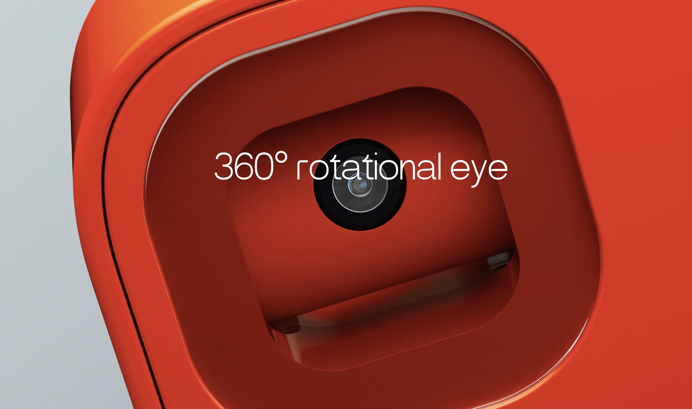
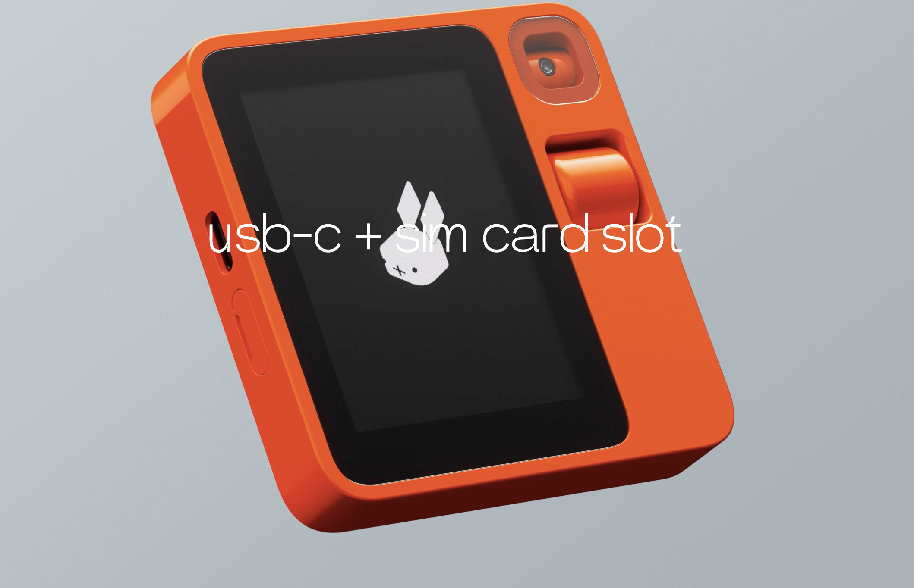

sharanx
sharanxReview of the Rabbit R1

A detailed review of the newly launched Rabbit R1, exploring its hardware and software design, its strategic position in the market and its potential challenges
The Launch of Something New
To say that the Rabbit team mimicked Steve Jobs’ keynote would be an understatement! The only thing missing was the Vera Wang turtleneck—it was a black t-shirt instead. Otherwise, the presentation featured the same slide style from Apple Keynote with the gradient, the same format, the hand gestures, and even the “One more thing…” announcement at the end. But OnePlus did this before too, turtleneck included. While it was considered cringe-worthy at the time, the product compensated for the lack of originality in the presentation. So, let’s not dwell on style and focus on the substance instead.
Background
The tech world has been in pursuit of two things over the past couple of years. The first is an answer to what will replace the smartphone. Depending on whom you ask, the smartphone has remained relatively unchanged since its debut in 2007. It has been upgraded in small ways with better screens, cameras, and sensors, but otherwise, the form factor has stayed largely the same since the beginning, despite some major flaws in the structure. But it’s been more than 16 years, Steve Jobs isn’t around, and everyone is looking for the smartphone killer.
Secondly, the success of OpenAI’s ChatGPT has demonstrated to everyone how powerful AI assistants can be. The open-source space has also made giant leaps with Llama 2 and Mistral AI models, and you can achieve the same capabilities as ChatGPT, and even the interface, running on your local computer with relative ease using tools like Ollama.
With the addition of vision, audio, and speech capabilities into AI models, they are now ready to move beyond the browser and integrate into people’s lives, understanding instructions within their own contexts. For this, they may need to leave desktop browser windows and move onto mobile phones instead. But mobile phones are still a reach-into-your-pockets-or-handbag away, and that’s not good enough either. People need something even more readily available. Enter Meta Ray-Ban, Humane’s AI Pin, etc.
Thirdly, these models have so far been hamstrung by their inability to perform actions on behalf of the user. They cannot yet click buttons on screens and other interfaces, and the OS architecture and security do not allow an app to interact with the interfaces of other apps as yet, and rightly so. But this also means that we have to duplicate actions and information across apps in order to achieve certain goals.
With this backdrop, I think we can evaluate what Rabbit R1 is doing much more accurately.

Hardware Design
It seems they hired Teenage Engineering (nice name), which appears to have a penchant for creating retro-futuristic tech products, reminiscent of Dieter Rams’ Braun designs. The design features a very cool, Lego-inspired shell that houses a great-looking touchscreen, a camera on a swivel, a scroll wheel, microphones, a slot for USB and SIM cards, and a push-button on the right side of the product. The touchscreen is a great addition, making interactions with apps, information delivery, and answering questions much faster than the audio-based delivery chosen by the AI Pin by Humane.
The camera on a swivel seems like a good idea, as the R1 can potentially scan the environment to find what a user may be referring to in their instructions. However, the plastic above the camera prevents the device from being held at an angle less than about 45 degrees, meaning the user must position the device almost vertically, like a smartphone, for the camera to see. This is odd, and I’m not sure why this choice was made.
Why not just position the camera on the very edge without the top plastic part causing an obstruction?

I’m also struggling to understand the purpose of the analogue scroll wheel. Is it meant to help make selections within the touchscreen interface? That doesn’t seem likely, as it would potentially be faster to use your finger to scroll on the touchscreen itself. Is it intended for manually positioning the camera? If so, positioning it to the right of the camera would have been more logical. Is the idea to enable one-handed scrolling on the touchscreen? If I were holding the device in my left hand, using my index finger to scroll might be easier than using my thumb on the screen, but I would still need to make button selections, and for that, I might be hitting the push-button. This seems like a learned behaviour, but it’s the only explanation I can come up with given my limited understanding. However, if you hold this device in your right hand, the positioning of the scroll wheel becomes even more perplexing! You can’t scroll with the thumb that’s holding the side of the device, and you can’t use your left hand to operate the scroll wheel without blocking your view of the screen. So, why is it designed this way?
Finally, I didn’t notice any way for the product to be attached to a jacket or shirt, and the placement of the screen and push-button suggests that the R1 is intended to be carried in a pocket and pulled out when needed. This raises a significant concern for me. An AI companion needs to be readily accessible within the user’s physical space to understand instructions better (and to keep the instructions simpler). If it needs to be pulled out of a pocket—or more likely from a bag, since the smartphone will probably be in the pocket—it won’t be as easily accessible. The AI Pin addressed this better by being always accessible from the t-shirt or jacket where it is clipped. The Meta Ray-Ban was another good attempt, but since they are sunglasses, wearing them all the time is nearly impossible.
Software Design
Jesse Lyu, the founder and CEO, begins his keynote by recognising one of the most fundamental issues with the way smartphones are designed. This is an extremely deep insight, and I’m so glad someone on such a large stage was able to express it. During the early days of the smartphone, Apple proudly used the line, “There’s an app for that,” in their marketing to highlight how many apps there were in the App Store. You see, in their view, there was an app that could achieve any task that you wanted to do. But the mental model of a person who wants to perform a specific task requires them to choose the app that would enable them to do it, then open that app and make the right choices in the interface in order to achieve the task. If you’ve got more than one app that could help you do that task, there’s some time spent in your mind deciding between them. And if you have a task that needs more than one app to be achieved, you’ve just made the choices even more complex. Given that most people have about 90 different apps on their phones on average, this isn’t a small matter. You also need to have downloaded these apps ahead of time in anticipation of needing them in the future. But that’s another story altogether.
This is also third-generation thinking, where you have to consider the objective you need to achieve and then break it down into the steps required for the computer to help you achieve it. Contrast that with fourth-generation thinking, which simply requires the user to clearly express the goal, and the computer then breaks down the tasks into atomic bits, figures out the best tools to use to solve the problem, and solves it. This was science fiction before the advent of AI. This is reality today. There’s also the duplication of data and instructions between the apps to contend with. For example, travelling somewhere on a vacation requires an app for flight bookings, an app for hotel bookings, an app to book a ride, and another to research the highlights of the destination. Each of them will ask you for your name, dates, times, locations, your companions, your preferences, over and over again. And that’s not even considering the fact that you need to register with each app too!
This is a problem today, and Jesse and his company used this idea as the foundation to build their solution to combat this problem. Kudos to them for being able to figure out a way around it with their Rabbit Hole interface, even though it doesn’t yet completely solve all the problems. There’s much more to say about the software, the interfaces, and the UI design, which are all brilliant but table stakes for a game this big. The fact that they understood the above point and also broke through the 500ms (while not yet hitting the Doherty Threshold) makes the device feel really responsive, which is just amazing.
Business Design
The fact that the product was launched at $199 is simply a masterstroke. A device that purports to be an AI Companion is really only that useful today, and the price point is perfect. But how could they not have a recurring monthly fee? They must have servers running in the background to serve the needs of the users. How do they expect to fund this? To me, this is where the rabbit hole comes in. I think the apps need to pay to be listed there. Maybe not initially, but eventually. They also may have a local model running on the device that handles the majority of the daily queries and only passes along the complex ones to the server, à la Mixtral of Experts. This would keep their costs low too. There is a possibility that they will benefit from a model that understands the physical world of the user better. This is greenfield at the moment, and they are going to be one of the first to occupy this space. But this is me just conjecturing, and the answer may be far simpler; the operational costs may just be borne through VC funding until they hit some kind of threshold. Or maybe it has to do with advertising, a.k.a. “recommendations” that the agent provides.
Conclusion
The R1 is intriguing and addresses some key concerns of mobile computing. However, several challenges persist. While the Rabbit R1 excels in software, the hardware design falls short of being an effective AI companion. A smartwatch with a camera still remains the form factor to beat. Given these shortcomings, I predict limited usage and abandonment by most users within a few months unless these improvements are implemented by the time they start shipping in March. With regard to competition, this concept could easily be replicated by smartphone manufacturers. If they cannot produce it independently, an acquisition could be on the cards, which may be the anticipated endgame anyway.
For any AI companion, the major obstacle remains payments. The demo didn’t quite show how the many payments that were alluded to actually took place, and I’m curious to see how this aspect works. While I don’t personally wish to purchase this product due to the aforementioned issues and deficiencies, I still regard it as a ‘directional innovation’ that pushes the industry in the right direction. There will be numerous iterations before the ideal form factor for the product is realised, as well as the perfect business models for the companies backing them. Consequently, I intend to keep a close eye on Jesse and his team to see if they adapt and iterate as I anticipate they will.